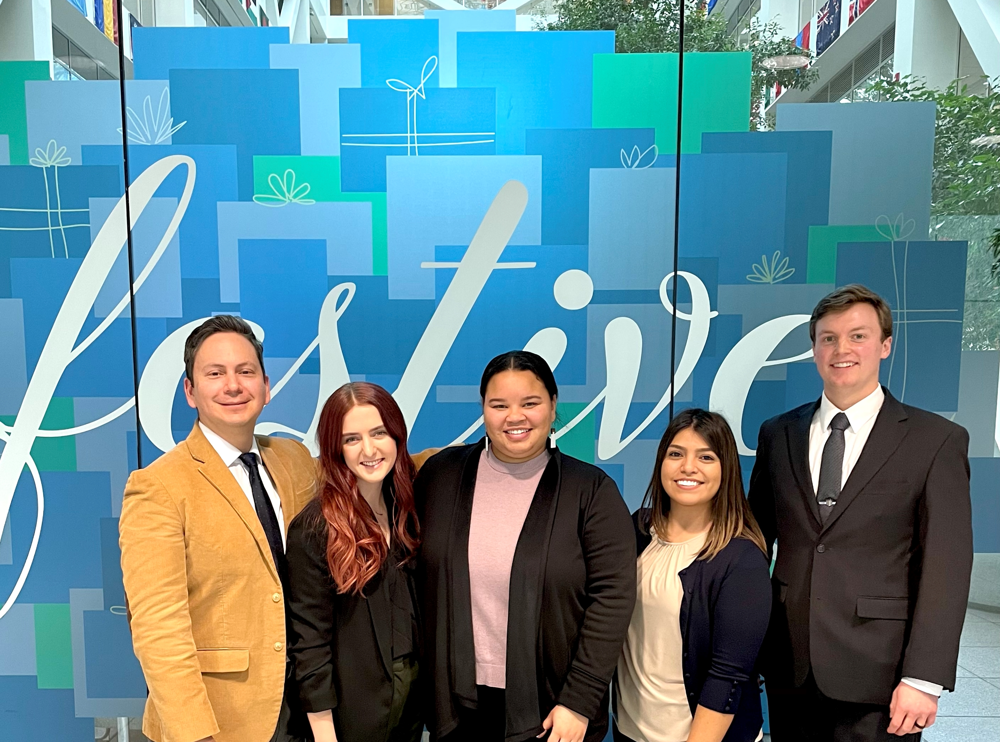

Growing Up in Highland Park
Highland Park is a small town right outside of Downtown Los Angeles. As a child, my neighborhood expereinced gang violence and heavy crime. However, the community was small and tight-knit. Some of my fondest memories include swimming competitively and playing water polo at the community pool. Over time, Highland Park has become much safer, but this has come at a cost. As the police began cracking down on local gangs, the community became more attractive to outside investors. Highland Park became a safer but incredibly expensive town - this forced many locals who rented in the area to move to cheaper cities. Overall, growing up in Highland Park provided a unique opportunity for me to develop diverse perspectives and grit. I am happy that it has become a safer place to live.
Attending BYU

The MPA Program
The MPA program has been a blast! The first semester consists of a very heavy class load. Some of the classes we took included Statistical Analysis for Public Organizations, Organization Behavior, Quantitative
Decision Analysis, and many more! The dynamic was unique in that we were put onto teams that we work with for each class. Getting used to this level of team work took some time, but I felt very thankful for
my teammates and the growth I had in the program alongside them.
Click here to check out the MPA Program!
